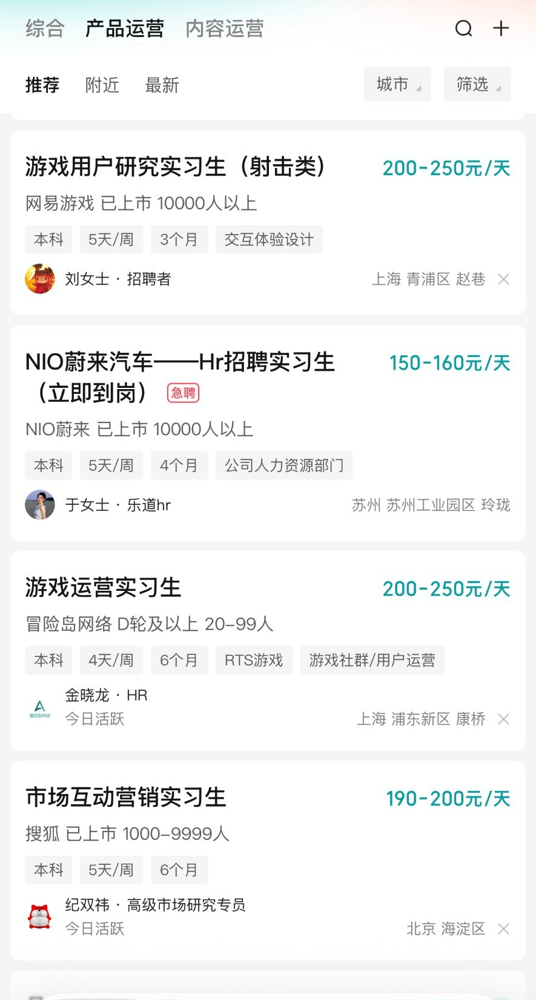
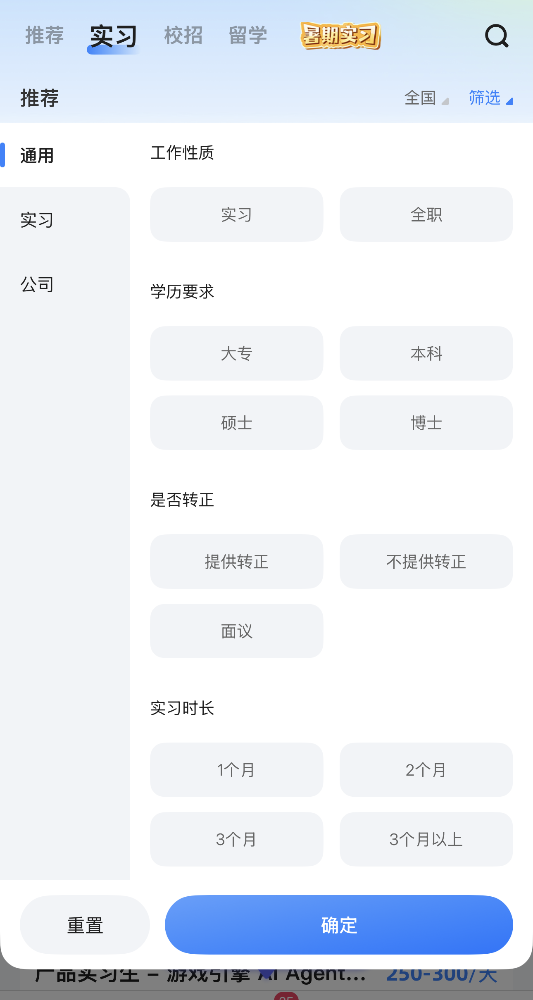
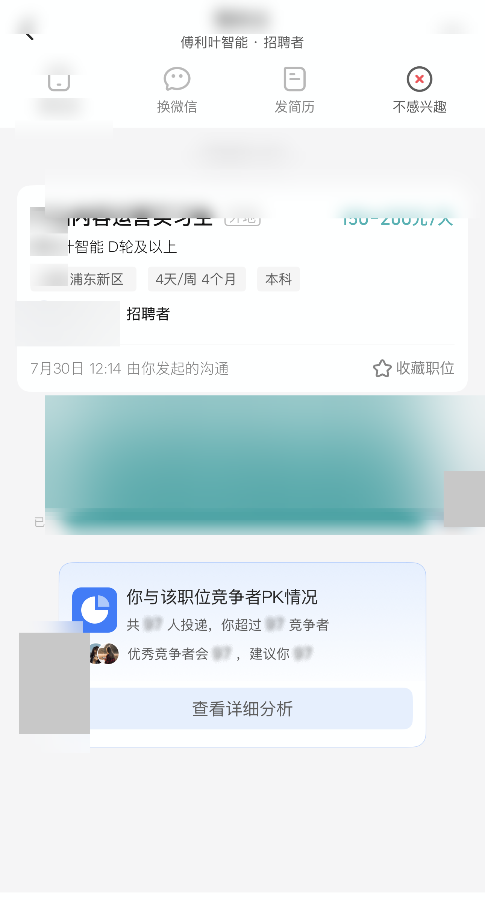
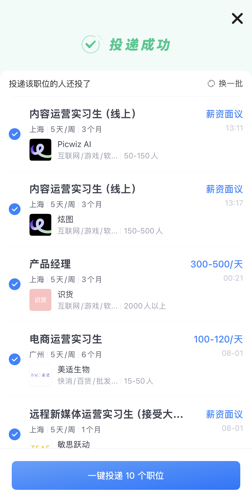

战略层
两款产品的收入主要来自 B 端（企业发布、曝光付费），C 端弱势群体的体验被结构性忽视。
一份基于实习僧与 Boss 直聘双平台拆解的产品研究报告，站在「双非 / 无经验」学生用户的视角。
大学生找实习几乎必用实习僧与 Boss 直聘。但从「双非 / 无经验」用户视角看，这类产品的默认逻辑服务于"已经有竞争力简历"的求职者，对弱势群体的适配明显不足。本报告的目标是拆解这些短板，并给出可落地的优化方向。
下文的每一个痛点，都有公开的行业调研数据支撑。
两款产品的收入主要来自 B 端（企业发布、曝光付费），C 端弱势群体的体验被结构性忽视。
关键路径"搜岗 → 判断够不够格 → 投递"中，双非用户在"判断是否够格"这一步几乎只能自己读 JD 硬猜。
C 端隐性成本高：海投低效、被"已读不回"消耗情绪、信息噪音大。
检索可按城市 / 行业 / 薪资筛，但推荐流未与"用户弱势背景"对齐，也无人辅助判断资格。
走查中保留的真实 App 截图，下面挑四张最有代表性的配文字说明。




准备投递时，列表却大量展示不匹配岗位，用户被迫在噪音中反复翻找，效率与信心双双受损。
"搜'用户运营实习生'，列表一半是销售/客服/游戏运营岗，翻好几页才遇到一个真正匹配的，越刷越没信心。"
JD 写"有经验优先"，叠加歧视普遍、双非获录比例低，用户根本无从判断自己投不投得中，不敢投、不会投。
"JD 写'有经验优先'，看完不知道自己该不该投，怕投了也是石沉大海，最后大多没投。"
没有"双非上岸经验"社区，而多数求职者最大困难正是"找不到自身优势、定位模糊"。
"不知道同专业学长学姐怎么上岸的，身边没人可问，全靠自己盲投。"
筛选区加"只看符合意向"开关，列表卡片标注匹配度（符合 / 不符），让推荐流优先展示与意向一致的岗位，从源头降噪。
方案 1 列表页示意：开启「只看符合意向」后仅展示匹配职位，卡片以圆点标注符合 / 不符，一眼过滤噪音。
在 JD 详情页增加「匹配度自检」模块：列出硬性要求与你的背景对照，标出硬伤与可补项，让求职者一眼判断该不该投，不再靠猜。
方案 2 示意：JD 详情页增加「匹配度自检」模块，硬性要求逐条对照、标出硬伤与可补项，一眼判断该不该投。
UGC 晾晒上岸经验，解决"缺少同类参考"，但成本高，放后面迭代。
方案 3 示意：经验社区 Feed，双非学长晾晒上岸经验，标注岗位与可复用方法，解决「缺少同类参考」。
优先解决最高频的"意向错配 / 不敢投"，社区类方案成本高、非核心痛点，符合 MVP 原则后置。
双非用户有效投递率、投递转化率、在匹配岗位上的停留与投递意愿。
下面三块是本研究背后的拆解维度与依据，默认收起，想看细节再展开。